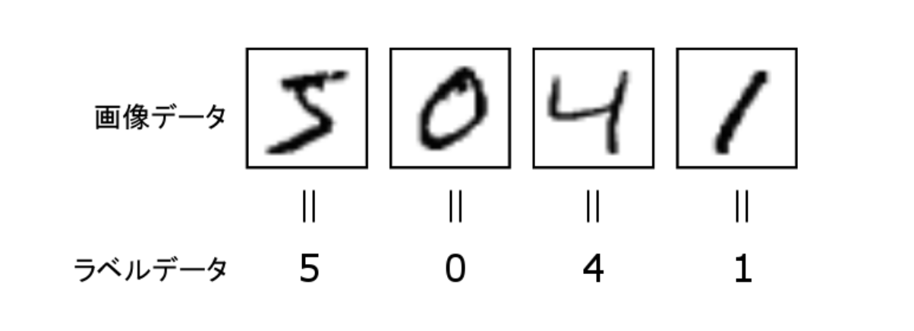

深層学習によるクラス分類（PyTorch Lightning版)#
「深層学習による回帰モデル(PyTorch Lightning版)」に続いて、 定番のMNIST でクラス分類に挑戦してみましょう。
MNIST は、「0」~「9」の手書き数字の画像データセットです。 Yann LeCun らによって、手書き文字データセットの NIST データベースから抽出＆加工して、 機械学習のチュートリアル用に作成されて公開されています。

ここは、画像データを説明変数 (X)、ラベルを目的変数 (y) として、多クラス分類問題として、 学習モデルを作成してみます。
モジュールの準備
import numpy as np
import pandas as pd
import matplotlib.pyplot as plt
import seaborn as sns
try:
import japanize_matplotlib #matplotlibの日本語化
except ModuleNotFoundError:
import os
os.system('pip3 install japanize_matplotlib')
import japanize_matplotlib
sns.set(font="IPAexGothic") #日本語フォント設定
MNIST データ#
MNISTは、sklearn のサンプルデータセットに含まれています。 そこからダウンロードします。
from sklearn.datasets import fetch_openml
mnist = fetch_openml('mnist_784', as_frame=False)
MNISTデータは、mnistのプロパティに格納されています。
mnist.data: 画像データ 70000件mnist.shape: ラベル 70000件
print('画像データ', mnist.data.shape, type(mnist.data))
print('ラベル', mnist.target.shape, type(mnist.target))
テンソルに変換#
PyTorch で処理するため、テンソルに変換しておきましょう。
import torch
X = torch.tensor(mnist.data / 255, dtype=torch.float32) # 正規化
y = torch.tensor(mnist.target.astype(np.int64), dtype=torch.int64) # 整数に変換
dataset = TensorDataset(X, y)
クラス分類の値
クラス分類の目的変数は、0から始まる整数値(torch.int64)を用います。
データセットに変換し、訓練データセット、検証データセット、テストデータセットを用意しておきます。
from torch.utils.data import TensorDataset, random_split
X = torch.tensor(mnist.data, dtype=torch.float32)
y = torch.tensor(mnist.target.astype(np.int64), dtype=torch.int64)
dataset = TensorDataset(X, y)
torch.manual_seed(0)
# データセットの分割
train, val, test = random_split(dataset, [50000, 10000, 10000])
モデルの準備#
ネットワークモデルを作ってみます。 とりあえず、３層の多層パーセプトロンとして定義します。
from torch.utils.data import DataLoader
class Net(pl.LightningModule):
def __init__(self, input_size=784, hidden_size=5, output_size=10, batch_size=10):
super(Net, self).__init__()
self.fc1 = nn.Linear(input_size, hidden_size)
self.fc2 = nn.Linear(hidden_size, output_size)
self.batch_size = batch_size
def forward(self, x):
x = self.fc1(x)
x = F.relu(x)
x = self.fc2(x)
return x
def lossfun(self, y, t):
return F.cross_entropy(y, t)
def configure_optimizers(self):
return torch.optim.SGD(self.parameters(), lr=0.1)
def train_dataloader(self):
return DataLoader(train, self.batch_size, shuffle=True)
def training_step(self, batch, batch_nb):
x, t = batch
y = self.forward(x)
loss = self.lossfun(y, t)
results = {'loss': loss}
return results
def val_dataloader(self):
return DataLoader(val, self.batch_size)
def validation_step(self, batch, batch_nb):
x, t = batch
y = self.forward(x)
loss = self.lossfun(y, t)
results = {'val_loss': loss}
return results
def validation_end(self, outputs):
avg_loss = torch.stack([x['val_loss'] for x in outputs]).mean()
avg_acc =torch.stack([x['val_acc'] for x in outputs]).mean()
results = {'val_loss': avg_loss, 'val_acc': avg_acc}
return results
def test_dataloader(self):
return DataLoader(test, self.batch_size)
def test_step(self, batch, batch_nb):
x, t = batch
y = self.forward(x)
loss = self.lossfun(y, t)
results = {'test_loss': loss}
return results
def test_end(self, outputs):
avg_loss = torch.stack([x['test_loss'] for x in outputs]).mean()
avg_acc = torch.stack([x['test_acc'] for x in outputs]).mean()
results = {'test_loss': avg_loss, 'test_acc': avg_acc}
return results
ボストン住宅データセットの回帰モデルとも比較してください。
- 目的関数（損失関数）を交差エントロピー誤差(cross_entropy)に変更している
- Accuracy (正解率)も計算するようにしてある。
当然ですが課題は..
より良いモデルを定義していきましょう！！ となります。
学習#
from pytorch_lightning import Trainer
torch.manual_seed(0)
model = Net()
trainer = Trainer(max_epochs=10)
trainer.fit(model)
| Name | Type | Params
--------------------------------
0 | fc1 | Linear | 3.9 K
1 | fc2 | Linear | 60
--------------------------------
4.0 K Trainable params
0 Non-trainable params
4.0 K Total params
0.016 Total estimated model params size (MB)
... (省略) ...
前回、SciKit-Learn の MLPClassfierを使ったとき、 正解率は0.8715に達していました。超えることはできましたか？
練習#
MNISTは、練習用データとしても簡単に高い精度が得られるので、あまり練習にならないと言われています。 （機械学習の進化は恐ろしいですね。）
というわけで、MNIST以外のデータの分類モデルも試してみましょう。
CIFAR-10#
CIFAR-10データセット（Canadian Institute For Advanced Research)は、次のラベルがつけられた画像データセットです。
- ラベル「0」： airplane（飛行機）
- ラベル「1」： automobile（自動車）
- ラベル「2」： bird（鳥）
- ラベル「3」： cat（猫）
- ラベル「4」： deer（鹿）
- ラベル「5」： dog（犬）
- ラベル「6」： frog（カエル）
- ラベル「7」： horse（馬）
- ラベル「8」： ship（船）
- ラベル「9」： truck（トラック）
Alex Krizhevsky氏／Vinod Nair氏／Geoffrey Hinton氏によって、オブジェクト認識用画像データセット「80 Million Tiny Images」から収集されて作成されたサブセットに由来しています。

from sklearn.datasets import fetch_openml
cifar10 = fetch_openml('CIFAR_10', as_frame=False)
カラー画像になっているので、より画像認識の雰囲気が楽しめるデータです。 ただし、データの次元が大きくなりすぎるので、そろそろPyTorchやTensorflow, Kerasを使わないと苦しいかもしれません。